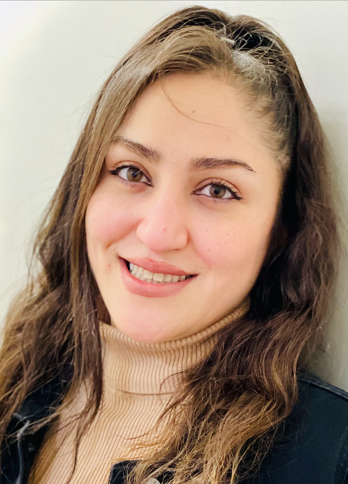

Nasrin Baghshirin

Summary
I am a hardworking and dedicated individual with experience in Web Development and Web Designing.
Web Developer with 6 years’ experience specialised in Wordpress front end and back end development. Expertise in all stages of the development cycle for web based projects and applications. Developed, tested and launched web based software using HTML, HTML5, CSS, CSS3, JavaScript, jQuery.
Education
BACHELOR OF COMPUTER SOFTWARE ENGINEERING
Azad University - South Tehran
1999 - 2005
Work Experience
- WEB DEVELOPER
Gipps Tech Company
2022 - Present
- Developing websites using WordPress, HTML, CSS, JavaScript, jQuery, PHP and implementing responsive design.
- Proficient in creating forms using various tools, including Gravity Forms, Contact Form 7, WPForms, Elementor Pro, and Ninja Forms.
- Updating and adding new features and components to websites based on client requirements.
- Implementing Advanced Custom Fields (ACF) to add extra content fields.
- Collaborating with designers and project managers to implement visually appealing and user-friendly interfaces.
- Troubleshooting WordPress issues and providing effective solutions.
- WEB DESIGN AND DEVELOPMENT
Uniq Artworks Company
2018 - 2021
- Building websites and landing pages from scratch using the Wordpress CMS, HTML and CSS, PHP.
- Developing projects from conception through to delivery to the client.
- Development to brief using both HTML, Javascript and CSS front- end frameworks and libraries.
- Liaising regularly with clients throughout the project to carry out satisfying results.
Skills
- HTML / HTML5, CSS / CSS3
- CMS: WordPress / Shopify
- Web Design Tools: Figma / Webflow / Canva / Photoshop/
- JavaScript / React / Next.js
- Version Control : GitHub
- Work collaboration tool: Click Up
/ Monday.com / Asana / Slack / Jira
STRENGTH
- Highly motivated to learn.
- Able to work independently as well as a team member.
- Excellent attention to detail
- Keen to create a positive work environment.
Other
@Nasrin baghshirin. All rights reserved.